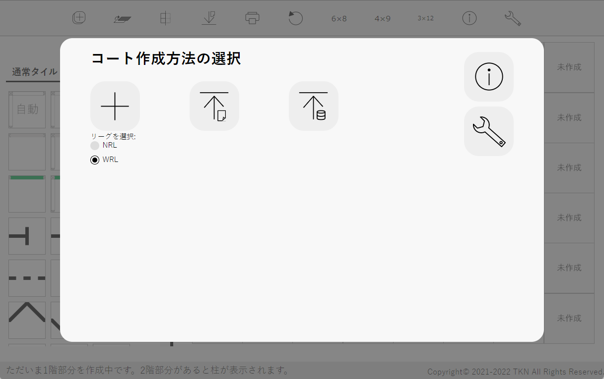

新規作成
新規作成このソフトウェアはロボカップジュニアジャパンレスキューラインのコースを作成できるものです。ルールは2022年版に準拠します。なお、レスキューキット・被災者・避難場所等、得点走行毎に場所が異なるものを配置する機能はありません。
アプリケーション版の配布はv1.1.1をもって終了しました。なおv1.1.1以前でもアプリケーション版を利用すると思わぬ不具合が発生する場合がありますので、ブラウザ版(このソフトウェア)をご利用ください。
ロボカップジュニアジャパンレスキューラインのコースを作成します。
3.ファイル変換古いバージョンのコート作成で保存したプロジェクトファイルを最新版で読み込めるよう変換します。
4.動作環境全機能共通の動作環境について。
5.変更履歴このソフトウェアの変更履歴について。
6.旧ソフトウェアの変更履歴旧ソフトウェア(RoboCupJunior NRL コート作成環境、RoboCupJunior WRL コート作成環境)の変更履歴について。
7.このソフトウェアについて起動するとこのような画面が出ます。いずれかを選んでコートを作成します。
新規作成コートを新規作成します。下の「リーグを選択」でNRLかWRLを選んでください。コート作成画面でリーグを変更することはできません。
 プロジェクトの読み込み
プロジェクトの読み込み作成途中のプロジェクトを読み込み、途中から編集作業を再開できます。クリックするとファイル選択画面が出るので、任意のファイルを選んでください。読み込むことができるファイルの拡張子は.rrlのみです。
※保存と読み込みは基本的に同じバージョンで行ってください。違うバージョンで行った場合正常に読み込まれないことがあります。メジャーアップデートでRRLファイルの内部構造が変わった場合、新しいバージョンでは古いバージョンのファイルをサポートし、新しいバージョンのファイルに変更できるようにします。その場合は下の表に△で表されます。古いバージョンで作られたファイルのサポートは、次のメジャーアップデートで打ち切ります。サポート打ち切り後はファイル変換をご利用ください。
| 作成 | ||||
| v1.0.0~v1.1.3 | v2.0.0~v2.0.2 | v3.0.0~v3.1.1 | ||
| 読み込み | v1.0.0~ v1.1.3 | ○ | - | - |
| v2.0.0~ v2.0.2 | △ | ○ | - | |
| v3.0.0~ v3.1.1 | × | △ | ○ | |
○…読み込み可能 △…読み込み可能だが非推奨 ×…ファイル変換が必要 -…不可能
 自動保存データの読み込み
自動保存データの読み込み後述の自動保存したデータを読み込みます。
 ヘルプボタン
ヘルプボタンヘルプ(このページ)を表示します。

コート作成のためのツールを実行するボタンやヘルプがあります。
コートに配置するタイルを選ぶことができます。この部分をスクロールすると「特殊タイル」や「タイル情報」があります。
作ったコートを表示します。
コート作成に役立つガイドを表示します。
まず③で配置したいタイルをクリックします。次に「タイル情報」の任意の階のボタンをクリックします(1回「タイル情報」のボタンを押すとその設定は次に階を変えるまでタイルを変えても保持されます)。さらに③でそのタイルを配置したい場所をクリックします。するとそこにタイルが配置できます。ダブルクリックで向きを時計回りに90度変えることができます。
③の一番左上にある被災者ゾーンのタイルは4か所にしか置けません。置ける場所は一番左上、その4つ下、一番上の列の左から5番目、その4つ下です。置くと被災者ゾーンが自動入力されます。任意の場所に入り口をつけてください。この機能は6×8タイルの1階部分にのみ対応しています。
ブラウザの予期せぬクラッシュなどに備えるため、作ったタイルは自動保存されます。保存されるのはタイルのみで、得点要素などは保存されません。すべてを保存するには「プロジェクトの保存」をしてください。コートを変更するごとに自動保存は上書きされ、それ以前の記録は消されます。
④のタイルのどこかをクリックすると右クリックメニューが表示されます。「このタイルの情報を削除」を押すと、そのタイルにある全ての情報が削除されます。
「チェックマーカーを置く」を押すとクリックしたタイルの右上にチェックマーカーが置かれます。ラインとかぶることがあります。「チェックマーカーを取る」で削除できます。
「障害物を置く」を押すとクリックしたタイルの中央に障害物が置かれます。「障害物を取る」で削除できます。

「バンプを置く」を押すと、上のような設定画面が出ます。まずバンプの個数を選びます。すると個数に合わせた入力欄が表示されるので、左側のスペース、上側のスペース、バンプの回転角度を半角数字で入力します。左側と上側のスペースは0~74で、37を指定すると中央に来ます。回転は-90~90で、0度を指定すると縦向きになり、数字が大きいほど右側に傾きます。下側のプレビューに現在の状態が反映されます。「決定」ボタンを押すと、クリックしたタイルにプレビューの通りにバンプが置かれます。右クリックメニューの「バンプを取る」を押すとすべて削除されます。
得点要素があるタイルにはチェックマーカーは配置できないため、1つのタイルにはチェックマーカー・障害物・バンプのうちどれかしか置けません。
 スタート画面へ戻るボタン
スタート画面へ戻るボタンスタート画面に戻ることができます。スタート画面に戻ったら「再開」ボタンが追加されているので、それを押すと元に戻ることができます。
 1階部分の作成/2階・半2階部分の作成ボタン
1階部分の作成/2階・半2階部分の作成ボタン1階部分の作成と2階・半2階部分の作成を切り替えることができます。いまどちらを作成しているかはガイドに表示されています。
 グリッドの表示/非表示ボタン
グリッドの表示/非表示ボタンコートのグリッドの表示・非表示を切り替えることができます。デフォルトではグリッドが表示されています。
 プロジェクトの保存ボタン
プロジェクトの保存ボタン作成途中のコートを保存できます。保存したファイルはまたこのシミュレーターで読み込めます。RRL形式のファイルが、Windowsでは通常「ダウンロード」フォルダに保存されます。クリックするとファイル名を入力するダイアログが出るので、入力してください。このとき拡張子の入力は不要です。
 印刷ボタン
印刷ボタン作成したコートのみを印刷できます。
作成したコートのすべての情報を削除します。この操作は取り消せません。
 残り全部を白にするボタン
残り全部を白にするボタンタイルが配置されていない(未作成タイルが配置されている)場所を白色のタイルで置き換えます。
 6×8タイルボタン、4×9タイルボタン、3×12タイルボタン
6×8タイルボタン、4×9タイルボタン、3×12タイルボタンコートの大きさを変更します。間違って変更してしまっても、入力していたコートの大きさに戻せば「オールクリアボタン」を押していない限り元に戻ります。なお4×9タイル、3×12タイルは被災者ゾーンの自動入力には対応していません。
ヘルプボタンヘルプ(このページ)を表示します。

ツールやヘルプがあります。
②をクリックすると、ファイル選択画面が出ます。RRL形式のファイルを開いてください。開くと自動で変換が始まります。②の下部にファイルの情報と現在の状態が表示されます。矢印がすべて黒くなったら、変換されたファイルが、Windowsでは通常「ダウンロード」フォルダに保存されます。
書き出したバージョンと読み込むバージョンで、メジャーバージョンが同じなら変換しなくても利用できますが、同じメジャーバージョン内で最新のものにする機能もついています。
もう1度変換ボタン②にあるファイルをもう1度変換できます。
600×600以上(900×700以上推奨)
Windows10 Home 21H2(Microsoft Edge v99.0.1150.36,Google Chrome v99.0.4844.51)
Windows10(Microsoft Edge,Google Chrome,FireFox各最新版)
Windows11(Microsoft Edge,Google Chrome,FireFox各最新版)
Mac OS(Microsoft Edge,Google Chrome,FireFox,Safari各最新版)
Linux OS(Microsoft Edge,Google Chrome,FireFox,Safari各最新版)
Chrome OS(Google Chrome,FireFox各最新版)
Windows10(旧Microsoft Edge,Internet Explorer)
その他PC向け旧OS
iOS
iPadOS
AndroidOS
※スマートフォンなどは画面が小さすぎるほか、ローカルhtmlファイルの起動ができません。
2020年1月22日までは、同じくロボカップジュニアレスキューラインのコートを作成するソフトウェアとして「RoboCupJunior NRL コート作成環境」と「RoboCupJunior WRL コート作成環境」(ヘルプでは2つ合わせて「旧ソフトウェア」と表記)を開発していました。しかし、アップデートを重ね機能がほぼ同じになってきたこと、またWRL向けのソフトウェアでNRLのコートも作成可能であることから、WRL版にNRL版を組み込む形で新たにこの「RoboCupJunior コート作成環境」を作成することとしました。2022年1月29日に公開したRC3版で動作が安定したことからそれをv1.0.0とし、UIの改善と機能追加を重ねています。
セマンティック・バージョニングを参考にしており、vX.Y.Zのようにつけます。Xはメジャーバージョンで、RRLファイルの互換性がなくなるなど大きな変更があった場合に数字を1つ上げます。Yはマイナーバージョンで、機能性を追加した場合に数字を1つ上げます。Zはパッチバージョンで、バグ修正など細かい変更の際に数字を1つ上げます。詳しくは下記URLをご覧ください(ただしAPIをインターネットに公開しているわけではありませんし、旧ソフトウェアは必ずしもこれに従っているわけではありません)。
セマンティック バージョニング 2.0.0(https://semver.org/lang/ja/)リロードせずに長時間使い続けると、動作が重くなったり不具合が出ることがあります。再読み込みするか、「Ctrl+F5」を押してスーパーリロードしてください。ただし、プロジェクトを保存するのを忘れないでください。なお、再読み込みを行っても自動保存データは保持されます。
無断での不特定多数への公開、商用利用は禁止します。
Copyright© 2021-2022 TKN All Rights Reserved.